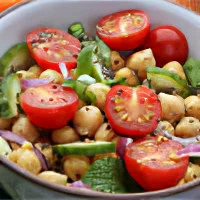

Лечебные диеты
Щелочная диета
Срок: 28 дней. Результат: -6 кг. Суть: в 2015 году Британское Общество Диетологов признало
щелочную диету, одной из самых популярных диет мира. Чем больше человек потребляет щелочных
продуктов, тем дольше он остается здоровым.
Диета ОВД

Аббревиатура «ОВД» расшифровывается как «основной вариант диеты». Главный принцип диеты ОВД
– это покрыть все потребности человеческого организма в питательных веществах.
Диета ПП
ПП - это аббревиатура «правильное питание». С помощью ПП можно отрегулировать обменные
процессы в организме и похудеть. При этом не потребуется мучить свой организм изнурительными
голодовками.
Диета стол № 1
Диета стол № 1 рекомендуется при язвенной болезни двенадцатиперстной кишки и желудка в
период выздоровления и при нерезком обострении заболевания. Также ее можно использовать при
нерезком обострении хронического гастрита с повышенной или нормальной секрецией желудочного
сока и при остром гастрите в период выздоровления.
Диета стол № 2
Диета стол № 2 рекомендуется при острых и хронических гастритах, колитах и энтеритах. Она
стимулирует секреторную функцию пищеварительных органов, нормализует моторику
желудочно-кишечного тракта.